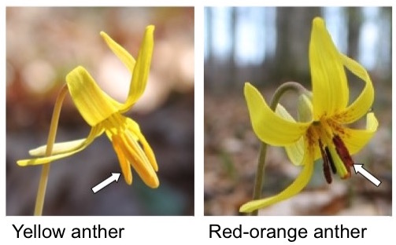

This is a lab to practice categorical linear models and ANOVA
You will be simulating data to use in this model.

Trout lilys (Erythronium americanum) have two distinct anther color morphs: yellow or red. The ecological consequences of anther color are unknown. Ripley and colleagues were interested in whether anther color affected pollinator preference. They went to a population of red-anthered flowers and counted the number of pollinator visits to local red flowers, and red and yellow flowers from a population 19km away. They chose these categories to disentangle the effects of color from the effects of novelty.
(scenario is from https://doi.org/10.17912/micropub.biology.001286)
We will start by simulating data under this model using a normal distribution and 3 categories: local red (1), distant red (2), and distant yellow (3). They had 30 flowers of each type.
n.1<-30n.2<-30n.3<-30mean.1<-29mean.2<-42mean.3<-46sd.1<-6set.seed(5)#sample fitnesses based on parameters above (the round function gives us integers)group1 <-round(rnorm(n=n.1, mean=mean.1, sd=sd.1))group2 <-round(rnorm(n=n.2, mean=mean.2, sd=sd.1))group3 <-round(rnorm(n=n.3, mean=mean.3, sd=sd.1))## but data together in a dataframesimData <-data.frame(resp =c(group1, group2, group3), pop=c(rep('1', n.1), rep('2', n.2),rep('3',n.3)))#look at itplot(jitter(rep(c(0, .5,1), c(n.1, n.2,n.3))), simData$resp, bty="n", xlim=c(-.5,1.5),xlab ="", ylab ="number of visits", xaxt="n")axis(1, at=c(0,.5,1), lab =c('red local','red distant','yellow distant'))
Call:
lm(formula = resp ~ pop, data = simData)
Residuals:
Min 1Q Median 3Q Max
-12.967 -3.967 -0.900 4.550 14.700
Coefficients:
Estimate Std. Error t value Pr(>|t|)
(Intercept) 28.967 1.069 27.100 < 2e-16 ***
pop2 13.933 1.512 9.217 1.61e-14 ***
pop3 16.333 1.512 10.805 < 2e-16 ***
---
Signif. codes: 0 '***' 0.001 '**' 0.01 '*' 0.05 '.' 0.1 ' ' 1
Residual standard error: 5.855 on 87 degrees of freedom
Multiple R-squared: 0.6101, Adjusted R-squared: 0.6012
F-statistic: 68.08 on 2 and 87 DF, p-value: < 2.2e-16
Q1. How do you interpret the output of the linear model? What do the results tell you about pollinator behavior?
Next, we’ll use this data to do an ANOVA to determine how much flower type in general affects pollinator visitation
library(broom)## Calculate SS_groupsSS_groups <-sum((augment(model1)$.fitted -mean(simData$resp))^2)## Calculate MS_groupsMS_groups <- SS_groups/(3-1)## Calculate SS_errorSS_error <-sum((augment(model1)$.resid)^2)##SS_error <- sum((augment(model1)$resp - augment(model1)$.fitted)^2) THIS ALSO WORKS## Calculate MS_errorMS_error <- SS_error/(90-3)## Calculate FmyF = MS_groups/MS_error## Do the F testpf(q=myF, df1 =2, df2 =87, lower.tail=F)
[1] 1.602339e-18
Now we’ll do an ANOVA with lm()
Anova(model1)
Anova Table (Type II tests)
Response: resp
Sum Sq Df F value Pr(>F)
pop 4666.8 2 68.077 < 2.2e-16 ***
Residuals 2982.0 87
---
Signif. codes: 0 '***' 0.001 '**' 0.01 '*' 0.05 '.' 0.1 ' ' 1
Q2: Do you results match?
Now we will use the ANOVA to compare pollinator visits between all pairs of categories.
em1 <-emmeans(model1, specs="pop")pairs(em1)
contrast estimate SE df t.ratio p.value
pop1 - pop2 -13.9 1.51 87 -9.217 <.0001
pop1 - pop3 -16.3 1.51 87 -10.805 <.0001
pop2 - pop3 -2.4 1.51 87 -1.588 0.2564
P value adjustment: tukey method for comparing a family of 3 estimates
Q3: Interpret the results of the analysis above? What matters most for determining pollinator visits?
Q4: Ripley et al. discover a rare purple-anthered morph. They repeat the experiment including the purple anthered morph. Copy and edit the code above to simulate data for an additional category with a mean of 2 visits per flower.
Q5: Rerun the linear model, ANOVA (with the anova() function), and emmeans on this new data. Interpret the outputs.